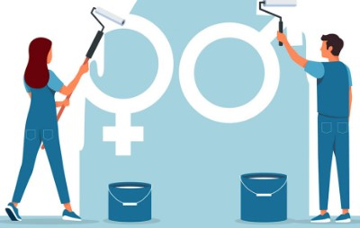

GENDER PAY GAP
Cosa si intende con questo termine?
Con il termine Gender Pay Gap, tradotto in italiano “divario retributivo di genere”,
si intende la differenza nella retribuzione oraria lorda media tra donne e uomini che risulta essere praticamente
sempre a svantaggio delle prime. Per la precisione, a questa definizione corrisponde ciò che viene tecnicamente chiamato Gender Pay Gap “non corretto” che tiene dunque in considerazione solo il salario orario medio.
Esiste anche un Gender Pay Gap “corretto” che, oltre al salario orario medio, tiene conto di quelle caratteristiche individuali che potrebbero spiegare una parte del divario salariale come le differenze di occupazione, il livello di istruzione e l’esperienza lavorativa.
Se si considera l'economia nel suo complesso, in Europa le lavoratrici guadagnano il 12,7% in meno ai lavoratori. Questo è un dato che varia sensibilmente all'interno dei paesi dell'unione. I valori più alti si registrano in Estonia (20,5%), Austria (18,8%) e Germania (17,6%). I più bassi in Slovenia (3,8%), Romania (3,6%) e Lussemburgo (-0,2%). In questo scenario, l'Italia si colloca al quintultimo posto con un valore del 5%, circa 8 punti percentuali in meno rispetto alla media dell'Europa.
LE CAUSE DEL DIVARIO RETRIBUTIVO DI GENERE
- Lavoro part time: In media, le donne svolgono più ore di lavoro non retribuito, per esempio prendendosi cura dei bambini o badando ai lavori domestici.Tutto ciò implica una minore disponibilità di tempo per il lavoro retribuito: stando ai dati raccolti nel 2021 quasi un terzo delle donne (30%) lavora part-time, mentre solo l'8% degli uomini lavora part-time. Quando si tengono in considerazione sia il lavoro non retribuito che quello pagato, inoltre, risulta che le donne lavorano più ore a settimana degli uomini;
- Scelte professionali influenzate dalle responsabilità familiari: Le donne sono inoltre più propense ad avere interruzioni di carriera: nel 2018, un terzo delle donne occupate nell'UE ha subito un'interruzione del lavoro per motivi di custodia dei figli, rispetto all'1,3% degli uomini. Alcune scelte di carriera delle lavoratrici sono influenzate dalla cura e dalle responsabilità familiari;
- Più donne nei settori a bassa retribuzione: Il 24% circa del divario retributivo di genere totale, può essere spiegato con una sovra-rappresentanza di donne in settori relativamente a basso salario come l'assistenza, la sanità e l'istruzione. Il numero di donne nel campo della scienza, della tecnologia e dell'ingegneria è aumentato. Nel 2021 le donne rappresentavano il 41% della forza lavoro;
- Meno dirigenti donne e meno pagate: Le donne occupano meno posizioni dirigenziali: nel 2020 queste costituivano un terzo (34%) dei dirigenti nell'UE sebbene rappresentino quasi la metà dei dipendenti. Se guardiamo al divario tra le diverse professioni, le donne manager sono le più svantaggiate: guadagnano il 23% in meno all'ora rispetto agli uomini manager.
STEREOTIPI DI GENERE
Avendo meno denaro da risparmiare e investire, i divari si accumulano e di conseguenza le donne sono a maggior rischio di povertà ed esclusione sociale in età avanzata. Nel 2020, il divario pensionistico di genere era pari a oltre il 28% nell'UE.
Un altro aspetto sul quale si sta premendo tramite campagne di sensibilizzazione è il Dream Gap, ossia quel fenomeno, documentato la prima volta nel 2017 in uno studio condotto dalla New York University insieme alle Università dell’Illinois e di Princeton, per cui le bambine intorno ai 6 anni smettono di sognare determinate carriere perché si credono troppo poco intelligenti rispetto ai coetanei maschi. Ciò avrebbe un impatto determinante sulle loro aspirazioni e futuro professionale.
È anche per questi stereotipi di genere diffusi che, come evidenzia un’indagine Openpolis, nel 2020 solo il 15,6% delle donne in Italia risulta impegnato in settori tecnico-scientifici rispetto al 18,3% degli uomini.
L’Osservatorio Conti Pubblici Italiani dell’Università Cattolica rileva che il salario medio per una laureata magistrale a 5 anni dalla laurea corrisponde a 1.403 euro netti mensili, mentre un laureato maschio guadagna in media 1.696 euro, generando una differenza di 293 euro, pari al 21% del salario femminile.
COSA STA FACENDO IL PARLAMENTO PER RIDURRE IL DIVARIO RETRIBUTIVO DI GENERE?
A marzo 2023 il Parlamento ha adottato nuove regole sulle misure vincolanti di trasparenza retributiva. I paesi dell'UE dovranno imporre sanzioni, come multe, per i datori di lavoro che infrangono le regole. Le offerte di lavoro e le denominazioni dovranno essere neutre dal punto di vista di genere. Il Consiglio deve ancora approvare formalmente l'accordo perché le regole entrino in vigore.